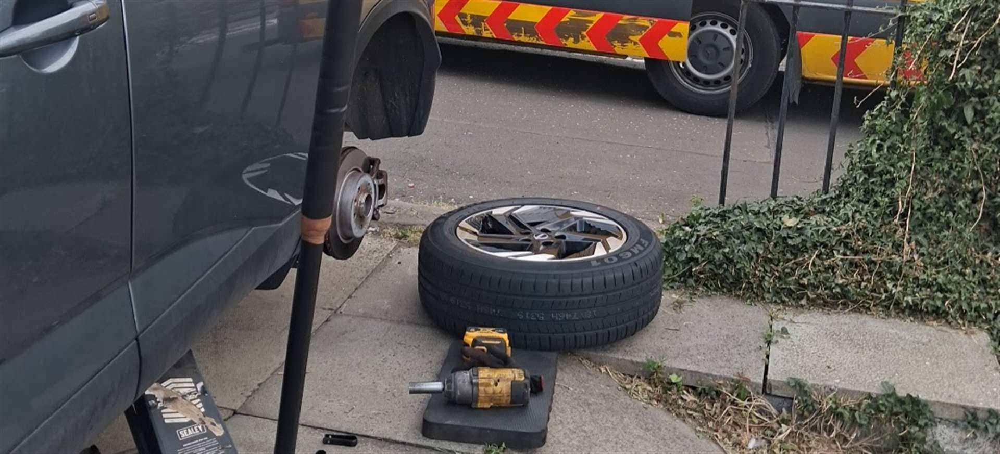

Mobile Tyre Fitting — We Come To You
Professional tyre fitting at your home, workplace or roadside location.
Tyres Fitted Wherever You're Parked
Booking a mobile tyre fitting means one less trip to a garage and no time lost sitting in a waiting room. Our fitters bring a fully equipped van straight to your driveway, office car park or roadside, carrying the tools and a wide range of tyre sizes needed to get the job done in a single visit. You get the same professional fitting standard as a workshop — just without leaving your day to fit around it.
Call NowMobile Tyre Fitting In Four Steps
-
Contact Us
Call, WhatsApp or send a quote request with your tyre size and location.
-
We Come To You
Our fitter arrives at your home, workplace or roadside location.
-
Tyres Fitted
Your new tyres are fitted on-site to a professional standard.
-
Back On The Road
We check everything over and you're straight back on your way.
Mobile Tyre Fitting Done Properly
24/7 Assistance
Emergency callouts any time, day or night.
Mobile Service
We bring the workshop to you, wherever you're parked.
Professional Equipment
Fully equipped vans, the same standard as a workshop.
Convenient Locations
Home, workplace or roadside — you choose where.
Customer-Focused Service
Clear pricing and honest advice, every time.

Covering Bathgate And Beyond
We provide mobile tyre fitting across Edinburgh, West Lothian, Livingston, Falkirk, Bathgate and the surrounding areas.
See all areas we coverMobile Tyre Fitting Questions
What is mobile tyre fitting?
Mobile tyre fitting means a fitter comes to your vehicle instead of you driving to a garage. Our vans carry the tools and stock needed to fit new tyres at your home, workplace or the roadside.
How do I book a mobile tyre fitting appointment?
Call us on 0131 202 0289, message us on WhatsApp, or fill in the quote form with your vehicle details, tyre size and location and we'll get back to you with a price and arrival time. Curious what goes into that price? See what affects the cost of mobile tyre fitting.
Can you fit any tyre brand?
Let us know your preferred brand and size when you get in touch, and we'll do our best to source and fit it for your vehicle.
Do you fit tyres at my workplace as well as my home?
Yes. We fit tyres wherever your vehicle is parked — home, workplace car park, or roadside if you're stuck.
How long does mobile tyre fitting take?
Most single-tyre fits are completed within the same visit, typically taking less time than a return trip to a garage would. Exact timing depends on the job and how many tyres need fitting.
Ready For Mobile Tyre Fitting?
Tell us your tyre size and location — we'll get back to you with a price and an arrival time.
Call Now